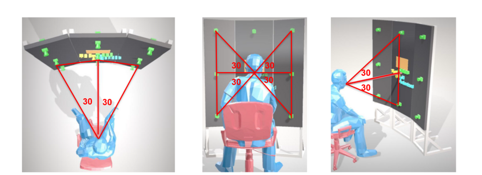

Sony Electronics · Staff Machine Learning Engineer · 2020 to 2022
Visual Speech Recognition (Lip Reading)
An in-car lip-reading system that keeps speech recognition working in noisy cabins.

Overview
- Organization
- Sony Electronics
- Role
- Tech lead
- Period
- 2020 to 2022
- Outcome
- One granted US patent and one international application
Visual speech recognition (lip reading) was an effort I led at Sony Electronics to develop an in-car application of lip-reading technology. In the presence of ambient noise, audio-based automatic speech recognition degrades in accuracy. To address this, we built a pipeline that augments or replaces ASR using video of the speaker, with no audio required.
We curated a large internal dataset of phrases covering entertainment, environmental, and vehicle control commands. We reproduced all the major published work in the area, tested it against our internal dataset, and expanded on it. This work led to several patents for me and the team.
01
Temporal Receptive Fields
One of the main novel contributions of this project was defining targeted temporal receptive fields for spatio-temporal data and studying their effect on visual speech recognition.
02
Spatio-Temporal Feature Extraction
Most major publications in this space use spatio-temporal feature extractors: 3D convolutional networks. Our best-performing models were custom 3D ResNets designed in-house.
03
Online Refinement with MFCC Features
One useful property of VSR data is that the audio comes along with the video. Audio was not used to generate the token sequence, but it could be used to validate and refine results after inference, by adding a fully connected head that generates MFCC features and is trained with a reconstruction loss.